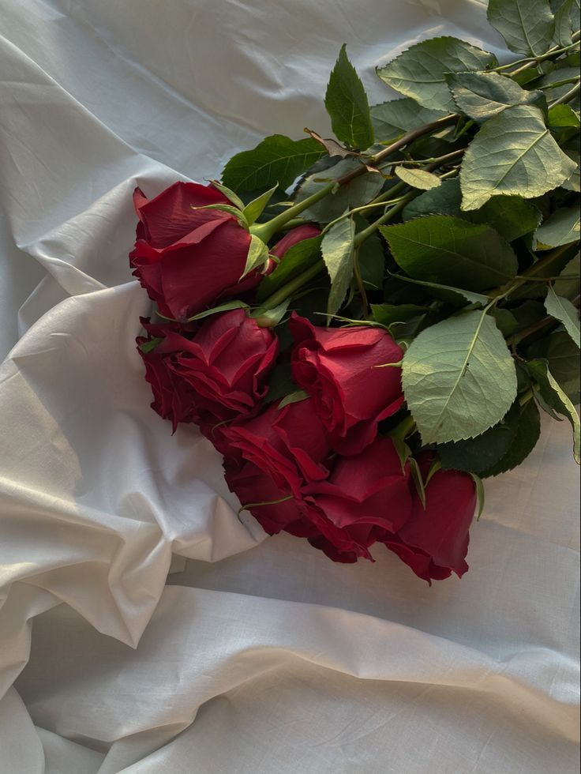

Flowers of the Month

Roses are timeless symbols of love and beauty, known for their velvety petals and rich fragrance.
Tulips are bright, cup-shaped flowers that bloom in early spring, often symbolizing renewal and hope.

Carnations are ruffled flowers prized for their long-lasting blooms and sweet, clove-like scent.
Baby’s breath features tiny, cloud-like white or pink blossoms often used as a filler in floral arrangements.
Call today!
or visit us at Rimberio to get started. Let’s create something beautiful together!